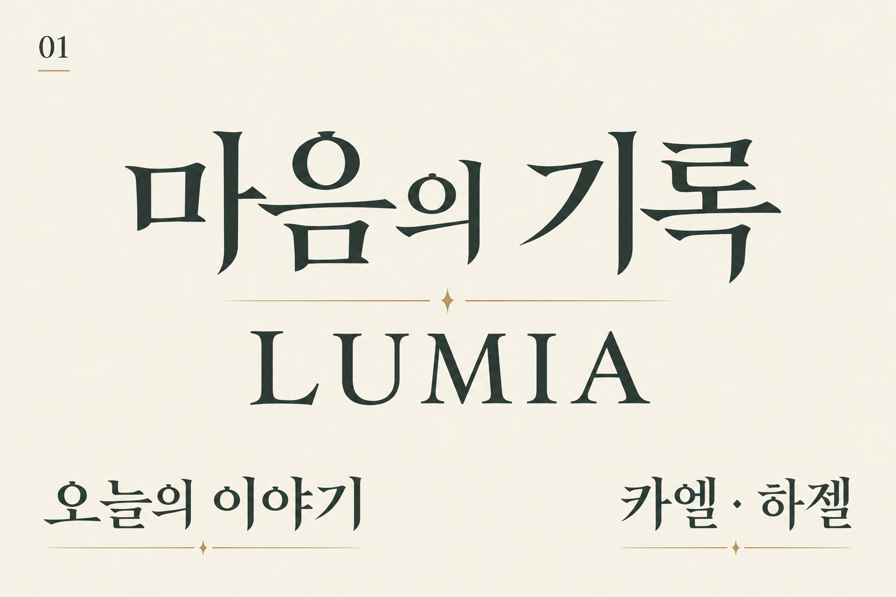
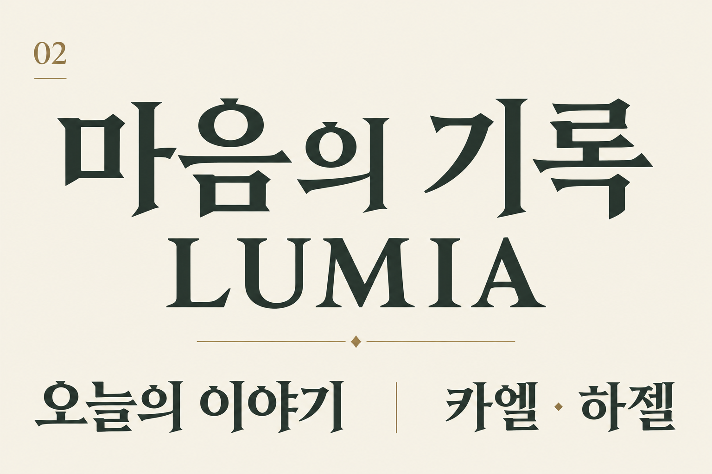
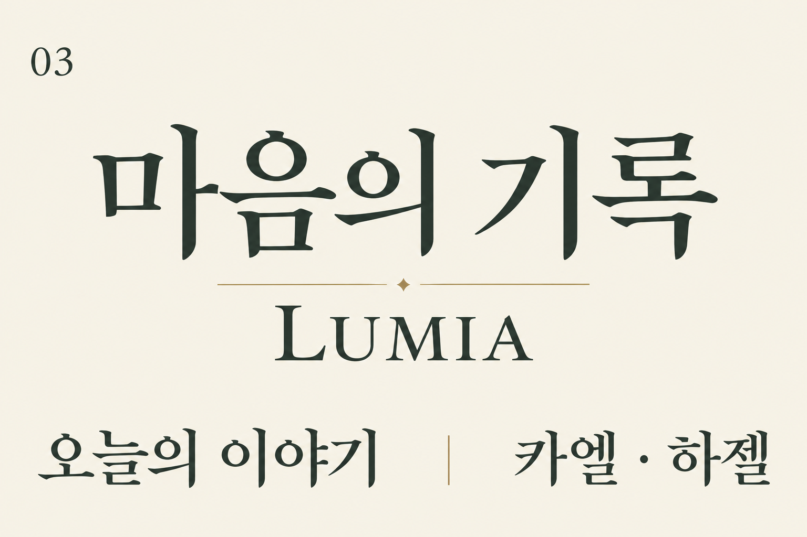
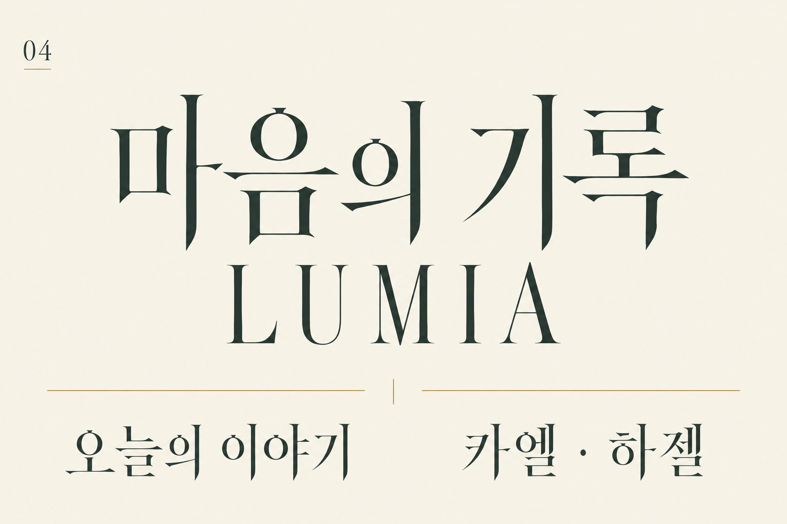
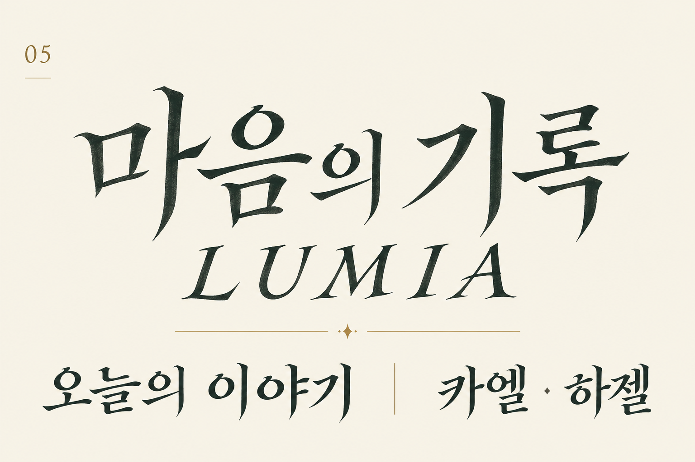

기존 3종과 구분해 검토할 5가지 새 방향입니다. 같은 문구와 밝은 종이 바탕으로, 획의 대비·무게·속공간·리듬을 비교합니다.
안정적인 네모틀과 유기적인 부리. 학원 이야기의 주 제목에 우선 추천합니다.

두툼한 중심 획과 짧은 쐐기 부리. 학원명과 중요한 장소에 무게를 줍니다.

열린 속공간과 절제된 획 대비. 이름과 소제목의 읽기 흐름을 중시합니다.

세로 비례와 섬세한 획 대비. 신비한 장면과 타이틀에 어울리는 방향입니다.

흘려 쓰지 않는 단정한 붓의 흐름. 일기 제목과 개인적인 기록에 온기를 더합니다.
